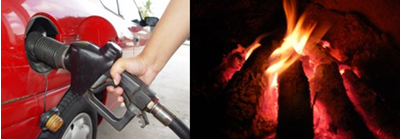

A Termodinâmica química ou termoquímica estuda o calor nas reações químicas, que podem absorver calor ou liberar calor.
Pode definir como a variação/quantidade de energia em uma reação.
- Processo Endotérmico: aquele que absorve calor e aumenta energia. Sensação de resfriamento.
- Processo Exotérmico: aquele que libera calor e diminui energia. Sensação de aquecimento.
1 - (ENEM - 2018) Por meio de reações químicas que envolvem carboidratos, lipídeos e proteínas, nossas células obtêm energia e produzem gás carbônico e água. A oxidação da glicose no organismo humano libera energia, conforme ilustra a equação química, sendo que aproximadamente 40% dela é disponibilizada para atividade muscular.
Na oxidação de 1,0 grama de glicose, a energia obtida para atividade muscular, em quilojoule, é mais próxima de:
a) 6,2 b) 15,6 c) 70,0 d) 622,2 e) 1120,0
1 mol de glicose (C6 H12 O6) são quantas gramas?
Como massa H = 1, C = 12 e O = 16 temos 6 . 12 + 12 .1 + 6 . 16 = 180
Então 1 mol de glicose = 180 g
Agora basta realizar uma regra de 3: 180 g C6 H12 O6 está para Ah = 2800 e 1 g C6 H12 O6 está para x
180 - 2800
1 - x
x = 15,5 KJ Essa é a massa total obtida, agora calculamos 40% disso:
15,5 . 40/100 = 6,2 KJ
Resposta = A
2 - (ENEM 2015) O aproveitamento de resíduos florestais vem se tornando cada dia mais atrativo, pois eles são uma fonte renovável de energia. A figura representa a queima de um bio-óleo extraído do resíduo de madeira, sendo ΔH1 a variação de entalpia devido à queima de 1g desse bio-óleo, resultando em gás carbônico e água líquida, e ΔH2 a variação de entalpia envolvida na conversão de 1g de água no estado gasoso para o estado líquido.
A variação de entalpia, em kJ, para a queima de 5 g desse bio-óleo resultando em CO2 (gasoso) e H2O (gasoso) é:
a) - 106 b) - 94,0 c) - 82,0 d) - 21,2 e) - 16,4
Variação resultante = Ah - Ah2 => - 18,8 - (- 2,4) => 16 KJ
Para 1 g => 16 KJ e para 5 g ?
16,4/x = 1g/5g => x = 82 KJ
Resposta = C